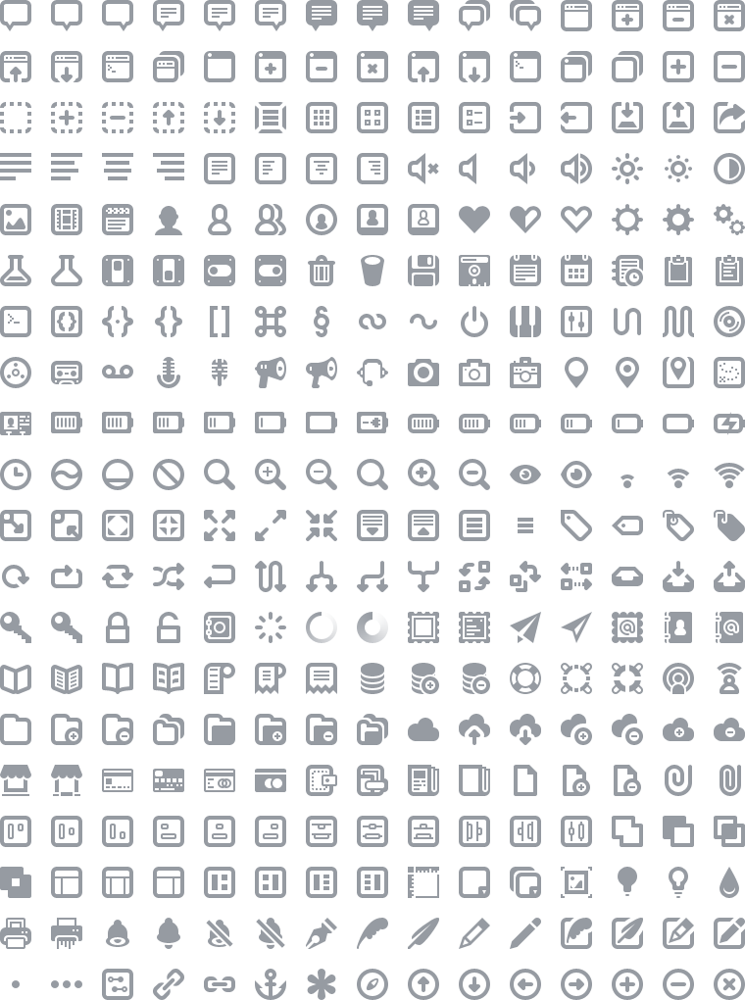

A lovingly designed and crafted suite of 300+ icons for web and user interface design.
Each icon in the Batch PSD is a single shape layer, meaning they can be scaled up—or down—without loss of quality.
The download includes:
- PSD file (shape layers).
- SVGs (128x128).
- PNGs (16x16, 32x32, 64x64).
- Webfont (.eot, .ttf, .woff).
Batch is now free, read why.

New in Release 1.2

New in Release 1.3
The Batch Webfont was added in R1.3. Big thanks to Matt Allen for his help creating the webfont.